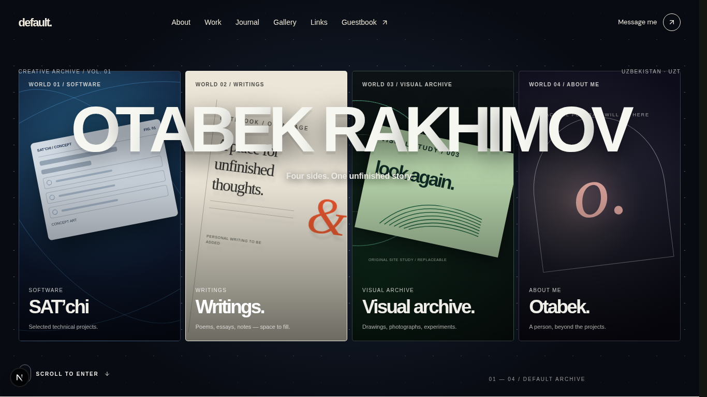
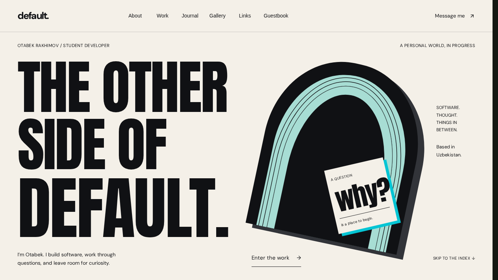
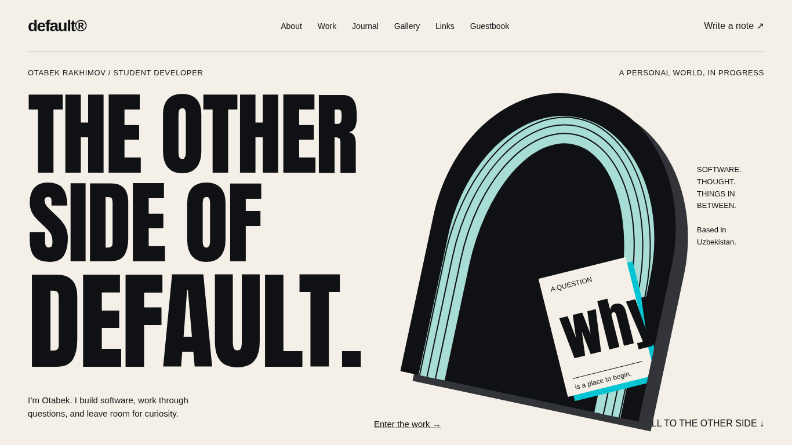
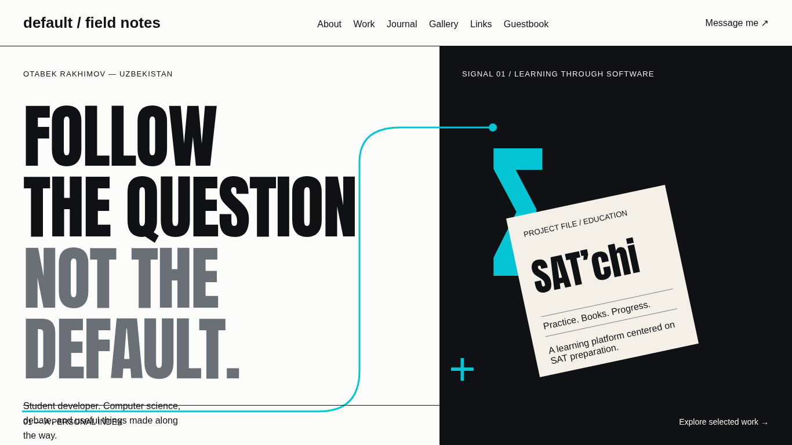

REVIEW BRANCH / 18 OCTOBER 2026
The Other Side
of Default.
Typographic Aperture was selected after two original browser-rendered concepts. This file displays actual application screenshots and recordings. Read the verification report for results and limits.
Before / after

Before — baseline 606934d
After — production build, this review branchDesktop baselines were freshly captured before editing. Phone baselines reuse the screenshots committed with 606934d; the initial phone recapture overlapped source edits and was discarded.
Two concepts, one decision

Selected: Typographic Aperture
Alternative: Signal / Field NotesSide-by-side selection criteria
Scrub the actual captured states
Motion, forward and back
Home aperture and receding-room handoff.
Two distinct Work exhibits; native scroll.
Print transformation and viewer open/close.
390px Gallery with simulated touch swipe.
The quieter rooms
What this is waiting for
Personal photographs, a portrait, original writing and fuller project facts. The Gallery demonstrates the design system with labeled, authored vector studies. It is not a completed personal photographic exhibition. No live submission or authenticated MFA session is claimed.